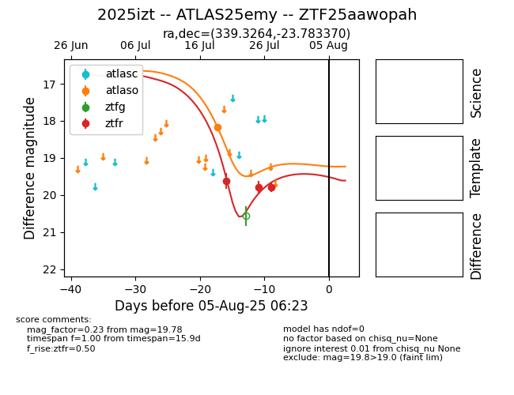

Target 2025izt at 2025-08-06 17:45, see:
FINK: fink-portal.org/2025izt
Lasair: lasair-ztf.lsst.ac.uk/objects/2025izt
ALeRCE: alerce.online/object/2025izt
TNS: wis-tns.org/object/2025izt
YSE: ziggy.ucolick.org/yse/transient_detail/2025izt
alt names
ZTF25aawopah (ztf,fink)
2025izt (tns,yse)
ATLAS25emy (atlas)
coordinates:
equatorial (ra, dec) = (339.3264,-23.78337)
galactic (l, b) = (31.6740,-59.62702)
photometry
last atlaso=18.17, ztfr=19.78
1 atlaso, 3 ztfr detections
